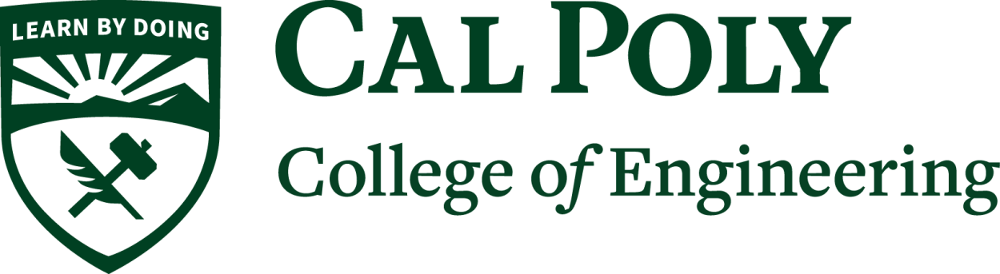

Mechanical Engineer · Thermal Systems
Design.
Simulate.
Build.
I am a mechanical engineer with a focus on thermal analysis in energy applications. My skillset spans design, simulation, and prototyping through build-test-iteration loops. I have demonstrated success in thermal energy storage, nuclear, data center, and high temperature heat pump applications.
Education
MSc — Energy Technologies, Thermal Analysis
Technical University of Denmark

BS — Engineering, Mechanical Design
California Polytechnic University
01
Selected Projects
02
Skills
Technical
Mechanical Design · Thermal Modeling · Product Development · Rapid Prototyping · Applied Statistics · Troubleshooting & Failure Analysis
Software
SolidWorks · ANSYS Fluent · AutoCAD · Python · MATLAB · Excel
Interpersonal
Project Management · Cross-Functional Collaboration · Active Listening · Risk Management
03
Contact
I am open to roles in thermal engineering, energy systems, and hardware development. Feel free to reach out directly.